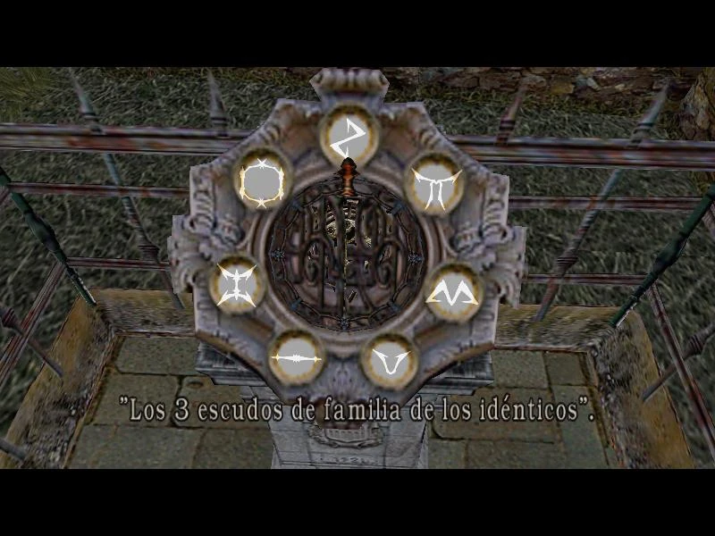

Resident EvilFranquicia Resident EvilResident Evil, conocido como Biohazard (バイオハザード) en Japón, es una serie de videojuegos, cómics, novelas, películas y coleccionables como figuras de acción, guías de estrategia y otras publicaciones. La saga fue desarrollada por la compañía Capcom y creada por Shinji Mikami, la saga norteamericana de películas fue creada por Paul S. Anderson y los libros por la escritora S. D. Perry. Resident Evil podría traducirse al castellano como "el mal que reside", mientras que Biohazard es el término en inglés cuyo equivalente en castellano sería "Peligro Biológico". ArgumentoEn 1998, una organización farmacéutica internacional dedicada a la investigación y desarrollo de productos y medicamentos biológicos llamada Corporación Umbrella ha dejado escapar un peligroso virus en los alrededores de una ciudad estadounidense llamada Raccoon City; tras unos misteriosos asesinatos caníbales en las Montañas Arklay, la unidad especial S.T.A.R.S. del departamento de policía de la ciudad ha decidido ir a investigar sin saber la pesadilla que los espera en aquel terrible lugar. La historia comienza con la llegada del equipo Alfa de la unidad S.T.A.R.S. quienes vienen a rescatar a sus colegas del equipo Bravo, pero un ataque de unos cerberus hace que se tengan que refugiar en una mansión grotesca y que al parecer está abandonada; pero la realidad es muy diferente, la mansión está infestada de zombis y criaturas extrañas que fuerzan al equipo a sobrevivir y ver caer uno a uno a sus compañeros. En su intento por sobrevivir, descubren un complejo de laboratorios llamado Arklay y donde la corporación ha estado desde hace varios años creando armas biológicas. Algunos meses después de aquel terrible incidente, los supervivientes del equipo S.T.A.R.S: Jill Valentine, Chris Redfield, Barry Burton y Rebecca Chambers intentan convencer a las autoridades de los acontecimientos; pero estos incrédulos o sobornados por la corporación no les hacen caso y dan de baja al equipo. Todos menos Jill van a Europa a investigar más de cerca a la corporación, mientras que en Raccoon City el virus se ha propagado por toda la ciudad convirtiendo a los ciudadanos en zombies; ahora Claire Redfield (la hermana de Chris) y Leon Kennedy (un policía novato) se refugian en una comisaría y llegan a unos laboratorios de Umbrella donde rescatan a Sherry Birkin y juntos salen de la ciudad, mientras que Jill debe sobrevivir junto a un grupo de los U.B.C.S. que fueron abandonados por Umbrella en la ciudad. Después de que Raccoon City fue esterilizada con la caída de un misil termonuclear, cada uno de los personajes se une a diferentes grupos y entidades para combatir el bioterrorismo y acabar con lo que quede de Umbrella. Desarrollo Los juegos, por lo general, siempre empiezan con una introducción que el personaje narra y explica vagamente la situación en la que se encuentra, cuando llega la hora al jugador de tomar el mando, el personaje tiene casi siempre una pistola con una cantidad limitada de munición y medicina (eso también depende de la dificultad), por eso una de las cosas más importantes es concentrarse en buscar tanto munición como medicina a lo largo del juego. El objetivo del juego, dependiendo del juego, es sobrevivir a la catástrofe que está ocurriendo y escapar de allí con vida, con el pasar de los años, los objetivos han cambiado un poco al de tener una misión importante que puede ser investigar algún hecho o rescatar a alguien; como es clásico del survival horror y sus variantes (EJ. jugador se ve muy a menudo en la situación de resolver acertijos). ---> Acertijos clásicos de este juego. Originalmente es un juego de Survival Horror, Resident Evil siempre trata de desastres biológicos y temas relacionados a este: como seres mutantes, armas biológicas, zombis, etc. Hasta la fecha se han vendido más de 90 millones de copias en total. Videojuegos |
{kind=link}